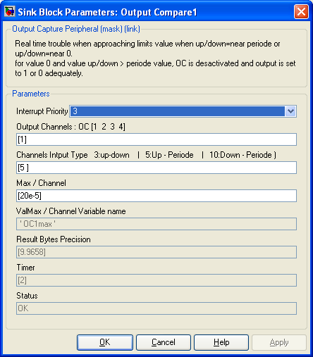

| |
Output driver for PWM output data

Description
The Output Compare (OC) block generates PWM impulse on the Output Compare peripheral. There is two entry for each channel. They can be configured to be :
-
Time Up and Time Down
-
Time Up ane Periode
-
Time Down and Periode
Input block value must be scaled using the following :
Up or Down or Periode = Time(s) * ( OCXmax / MaxChannel )
With MaxChannel : value you defined in the dialob box
OCXmax : value evaluated in the workspace (replace X by the channel number)
Time : the time in second that is < to MaxChannel defined
for example, if the max value is set to 20ms (MaxChannel = 20e-3) on channel 1, OC1max/20 will be the input value coding for 1ms.
A timer is automatically assigned and configured for each channel to provide the best resolution possible. The timer configuration is choosen to comply with the max pulse duration the channel will be able to generate.
Dialog Box

-
Interrupt is set on each rising and/or falling edge. The interrupt priority do not affect the accuracy of the PWM generated because PWM output pin are directly driven by the hardware. High interrupt priority is necessary for very short impulse generation that have fast consecutive event.
-
Output Channels
-
Specify Output Compare channel(s) (OC) used starting from 1. This modify the number of input of the block. Specify multiple channels
in vector form : [1 2] for OC1 and OC2.
-
Channels Input Type
-
Select for each channel which input you want to define :
3 : is to set both High and low pulse duration
5 : is to set both High pulse duration and periode
10 : is to set both Down pulse duration and periode
The first value of the vector reffere to the first channel defined in the vector "Input Channel'.
-
Max/Channels
-
Define max time in secondes of the longuest value that could be generated by each channel. Event is either Up, Down, or Periode max time for one channel. It should be set to the lowest value possible in order to get the highest resolution.
-
ValMax / Channel Variable Name
-
This Variable evaluated in the workspace allows to set correct scalling for input data. The ValMax is the max value that correspond to the duration defined in Max/Channels.
-
Result Byte Resolution
-
This is the log2 of the ValMax Variables for each channels. i.e. it is resolution of the channel. It is updated when you push the update diagram button (top right of the simulink menu).
-
Timer
-
This is the timer assigned to each channel. It is set automatically. The timer prescaler are defined in the Master block. It is updated when you push the update diagram button (top right of the simulink menu).
-
Sample Time
-
-1 mean inherited
-
Status
-
Information if error encountred.
|
The Microchip name PIC, dsPIC, and MPLAB are
registered trademarks of Microchip Technology Inc.
MATLAB, Simulink, and Real-Time Workshop are
registered trademarks of The MathWorks, Inc.
| Lubin Kerhuel 's Website |
Contact : [adresse e-mail retirée] |
|
|